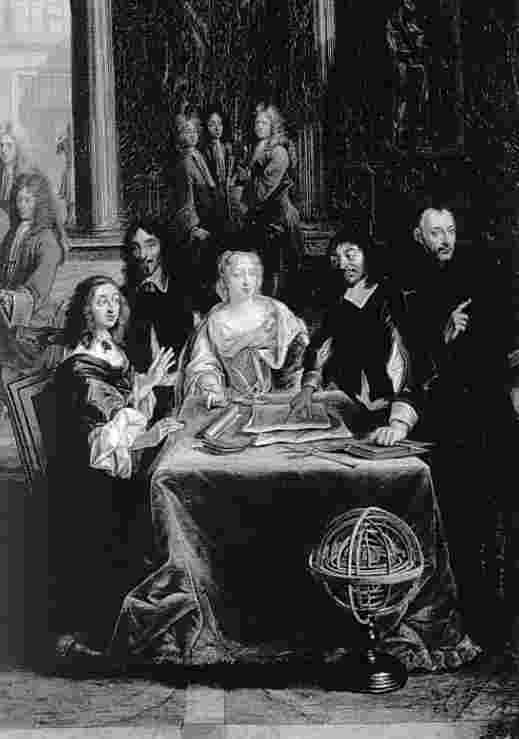

1649年笛卡尔离开荷兰，动身去瑞典。在斯德哥尔摩的法国大使皮埃尔·沙尼一直代表克里斯蒂娜女王 [86] 与笛卡尔通信。瑞典女王和伊丽莎白公主一样，经常征询笛卡尔对灵魂冲动的看法，并和他讨论道德哲学的一些问题。为了让她理解自己在信中表达的这些观点有何理论依据，笛卡尔赠给她一本《灵魂的冲动》。该书令她激赏，于是她邀请笛卡尔到瑞典宫廷任职。笛卡尔起初很犹豫，但最后还是接受了邀请。
他警惕荷兰是有道理的。在乌特列支，他与乌特的恩怨旷日持久，此后在莱顿又爆发了一场论战，对峙的双方仍然是支持笛卡尔的哲学家和反对他的神学家。一位名叫特里格兰德 [87] 的教授提交了一份论纲，指责笛卡尔宣扬伯拉纠主义 [88] 的异端思想（否认原罪，主张人可以不靠上帝的恩典而得救）。附属于莱顿大学的一所神学院的院长雷福森 [89] 也指控笛卡尔犯有亵渎罪。（雷福森曾劝笛卡尔皈依新教，但遭拒绝，似乎因此怀恨在心。）1647年5月，笛卡尔写信给莱顿大学和城市官员，抗议这些神学家的污蔑，并要求对手们指明自己的著作中哪些段落可以证实这些罪名。最后，城市当局颁布命令，禁止莱顿大学的教授在文章中或课堂上提及笛卡尔的著作。笛卡尔正是在此时开始考虑永久离开荷兰。
《哲学原理》法文版问世前夕，笛卡尔在法国的朋友试图为他争取法王的恩遇。法王允诺赐给他年金，但他后来发现这笔钱很难到手。1648年他回到巴黎，希望能在国王身边谋得一职，但无功而返。笛卡尔抱怨说，自己就像大象或豹子，只被当做稀罕的物种来玩赏（5.329）。他在巴黎感觉很不遂意，政治动荡让这个城市失去了宁静，雪上加霜的是，梅森也快辞世了。笛卡尔于8月末动身去荷兰，梅森9月1日就病故了。此后，克劳德·克雷色列尔 [90] 取代他成了笛卡尔主要的通信者。
就这样，笛卡尔空手回到荷兰，等待他的是一场新论战。曾支持他反击乌特的罗伊改变了阵营。1646年，罗伊不顾笛卡尔的劝阻，出版了一本物理学论著，书中不仅大量盗用了笛卡尔的观点，而且歪曲了后者的形而上学思想。笛卡尔在1647年《哲学原理》的法文版序言中批驳了罗伊的著作。罗伊用一篇短论来回应，笛卡尔在1648年发表了《反对某套理论的笔记》，逐条予以反击。

图7 瑞典女王克里斯蒂娜听笛卡尔的哲学晨课——正是这项安排导致了他1650年的早死
我们或许会以为，40年代后期这些令人沮丧的经历和论战让笛卡尔真正陷入了与世隔绝的状态，然而仍有一些人慕名而来，拜访住在阿尔克马附近的埃赫蒙德的笛卡尔。其中一位访客是名叫弗朗斯·布尔曼 [91] 的年轻人，他记录了1648年自己与笛卡尔进餐时的一次哲学长谈。布尔曼问了许多事先准备好的问题，笛卡尔的回答似乎出奇地坦率沉着。
1649年，克里斯蒂娜女王两次发信，邀请笛卡尔到斯德哥尔摩的宫廷任职。克里斯蒂娜知道笛卡尔1648年回法国时没能谋得职位，于是趁此机会力求让这位声名显赫的人物成为自己的扈从。笛卡尔没有立刻应允。他担心去瑞典不是好选择，一是因为他是天主教徒，融入一个新教宫廷不容易，二是因为他不愿让人觉得，克里斯蒂娜为了他而耽误国事。但到了1649年夏末，他终于说服了自己，动身前往斯德哥尔摩。
他几乎一到瑞典就开始后悔。他的哲学才能很少有机会发挥，即使能发挥，时间也不方便：克里斯蒂娜喜欢在清晨五点钟听他讲课。笛卡尔原指望朋友沙尼能陪自己，但沙尼直到1649年12月才回到斯德哥尔摩。这位哲学家被迫为女王写芭蕾剧说明，甚至还创作了一部喜剧，主角是两位误以为自己是牧人的王子。他难以适应瑞典的冬天，终于病倒了，于1650年2月11日逝世。